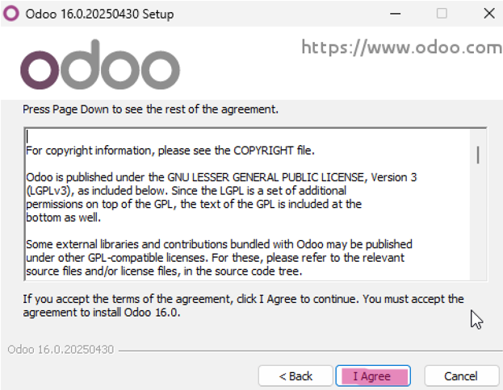
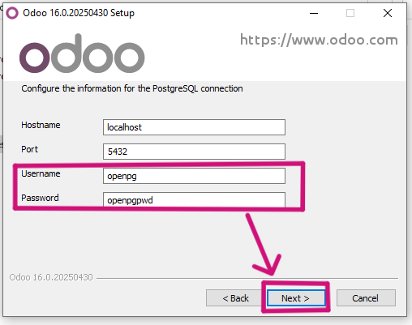
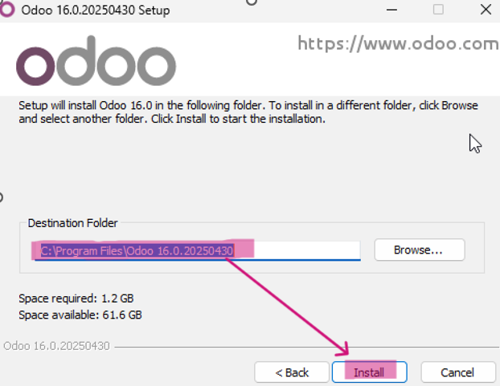
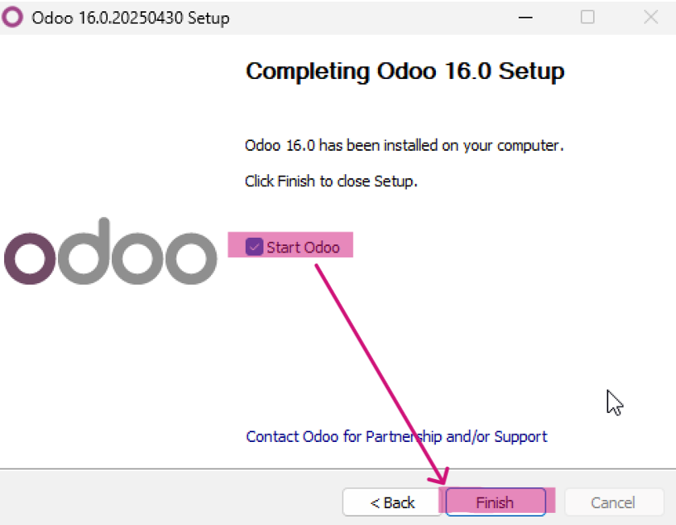
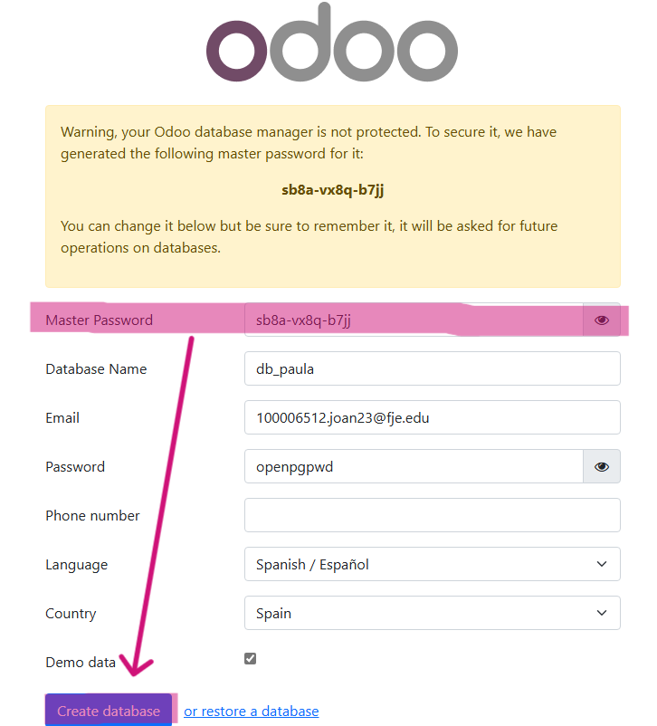
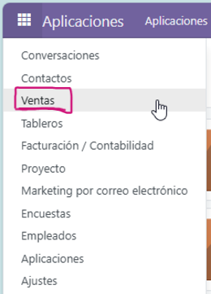

Guía paso a paso: Instalación de Odoo 16 Community
Esta guía detalla todos los pasos necesarios para instalar correctamente Odoo 16 Community en un entorno Windows usando una máquina virtual limpia.
Paso 1: Descargar Odoo
Ir a la página oficial de descargas de Odoo: https://www.odoo.com/es_ES/page/download y seleccionar la versión Odoo Community 16 para Windows.
Paso 2: Ejecutar el instalador
- Primero de todo, irnos a Protección antivirus y contra amenazas
- Seguidamente, deberemos de irnos al apartado Administrar la configuración y desactivar todo, ya que si no, nos dejará ejecutar el instalado.
- Una vez los pasos anteriores, hacer doble clic sobre el archivo descargado para iniciar la instalación. Lo primero que deberemos hacer será seleccionar el idioma y hacer clic en "OK" (solo hay inglés o frances).
- Cuando ya hayamos hecho el paso anterior, se nos abrirá la siguiente pestaña en la cual solo deberemos de hacer clic en "Netx >".
- Siguiendo, nos aparecerá la siguiente pestaña en la cual solo deberemos de hacer clic en "I Agree". 
- Durante el proceso, asegurarse de marcar la opción para instalar PostgreSQL, una vez marcada deberemos de hacer clic en "Next >".
- Seguidamente, en esta pestaña, deberemos de dejarla tal cual, como mucho podemos modificar la contraseña y hacemos clic en "Netx >". 
- Una vez hemos realizado los pasos anteriores se nos abrirá la siguiente pestaña en la cual solo deberemos de hacer clic en "Install" para instalar el instalador. 
- Seguir el asistente hasta finalizar la instalación y una vez finalizada hacer clic en "Next >".
- Finalmente cuando nos aparezca esta pestaña simplemente deberemos de hacer clic en "Finish". 


Paso 3: Crear una base de datos nueva
- Acceder a
http://localhost:8069desde tu navegador o en nuestro caso, nos llevará automáticamente solo ya que es lo que sigue tras la instalación. - Se abrirá la pantalla de creación de base de datos.
- Rellenar los campos:
- Nombre de la base de datos: db_TuNombre
- Email administrador: Tu correo
- Contraseña: Contraseña del administrador
- Idioma y país: Español (en nuestro caso)
Ejemplo de cómo lo hemos hecho nosotros:
Nahuel:

Paula:
 - Marcar la casilla Demo data.
- Guardar la contraseña maestra que aparece al final.
- Hacer clic en "Create database" y listo.
Paso 4: Acceso al panel principal
Una vez creada la base de datos, se redirige al dashboard principal, para acceder a ella deberemos de colocar el correo y la contraseña creados anteriormente y simplemente hacer clic en "Iniciar sesión".
Ejemplo Nahuel:

Ejemplo Paula:

Una vez iniciamos la sesión solo aparece la opción "Aplicaciones".

Paso 6: Verificación del entorno
- Los módulos deben aparecer visibles en el dashboard.
- El menú lateral incluirá más opciones como Contactos, Configuración, etc.
Ejemplo comparativo: Ventas vs CRM
Ventas
CRM


Consejos importantes
- Desactiva temporalmente Windows Defender si bloquea el instalador.
- Recuerda siempre apuntar la contraseña maestra.